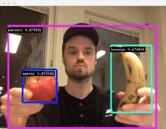

Machine Learning Workshop @IxDA Oslo by AndreasRef
ml5js
Templates, examples and exercises
0) p5js online editor
1) Train a classification algorithm

- Simple template: Webcam classifier. Alternative press and hold version
- Exercise 1 (individual): Train a classifier to distinguish between two different classes. Make the sketch output a descriptive text for each class.
- Exercise 2 (individual): Try to change the Webcam classifier + image example so it outputs images that represent your two classes
2) MobileNet pretrained classification

- 
3) Train a regression algorithm

- Exercise 3 (individual): Train the regressor and use the continuous output value slider.value() to control something. It is okay to leave the code as it is, and just focus on training the system
4) PoseNet pose detection

- Exercise 4 (group): Pick A or B
A) Edit the "Simple template" and use the x-y value of a bodypart to control something
B) Use "Classify poses" as a starting point and make something happen for three different (yoga?) poses
5) Beyond ml5js: Sound, speech and face

- Exercise 5A (individual): Use one of the values from the four emotions (angryVal, sadVal, surprisedVal or happyVal) from the "Pretrained Facial Emotions" example to control something.
- Exercise 5B (groups): Discuss ideas for a project you could build using speech recognition (a game, a service a campaign site or something else) and try to build a small part of it to prove the interaction.
6) Start prototyping!
- Exercise 6 (group):
Spend the rest of today coming up with a concept and build a small prototype that shows a key interaction. You can make something creative, useful and/or silly - up to you - just make sure it has a machine learning component somewhere! Informal mini-presentations start at 13:00.
Having issues running the examples?
- Make sure you are running them in Google Chrome
- Webcam access on Windows 10: Select Start > Settings > Privacy > Camera. Set "Let apps use my camera" to "On". Make sure Chrome has access to use the camera.
- Older computers with less powerfull graphics cards might run out of memory if you record hundreds or thousands of examples from the webcam, especially on Windows. If it happens, switch to another computer or be more modest when recording training data.
Other links
Contact Andreas Refsgaard
Website / Email / Facebook / Twitter / Instagram / GitHub / Vimeo